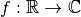
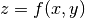
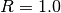
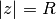
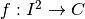
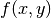

Plot¶
The following plot function need only matplotlib for plotting.
plotcf¶
-
WaveBlocksND.Plot.plotcf(grid, phase, modulus, darken=None, axes=None, linestylep='solid', linewidthp=1, color='k', **kwargs)[source]¶ Plot the modulus of a complex valued function  together with its phase in a color coded fashion.
Parameters: - grid – The grid nodes of the real domain R
- phase – The phase of the complex domain result f(grid)
- modulus – The modulus of the complex domain result f(grid)
- darken – Whether to take into account the modulus of the data to darken colors.
- axes – The axes instance used for plotting.
- linestylep – The line style of the phase curve.
- linewidthp – The line width of the phase curve.
- color – The color of the phase curve.
plotcm¶
-
WaveBlocksND.Plot.plotcm(matrix, phase=None, modulus=None, darken=None, axes=None, **kwargs)[source]¶ Plot complex matrices with the phase of the entries encoded into the usual color code.
Parameters: - matrix – The matrix data.
- phase – The phase of the entries, if not given they are computed.
- modulus – The modulus of the entries, if not given they are computed.
- darken – Whether to take into account the modulus of the data to darken colors.
- axes – The axes instance used for plotting.
Note that the additional keyword arguments are passed to the plot function.
stemcf¶
-
WaveBlocksND.Plot.stemcf(grid, phase, modulus, darken=None, axes=None, linestylep='solid', linewidthp=2, color=None, markerp='o', **kwargs)[source]¶ Stemplot the modulus of a complex valued function
 together with its phase in a color coded fashion.
Additional keyword arguments are passed to the plot function.
together with its phase in a color coded fashion.
Additional keyword arguments are passed to the plot function.Parameters: - grid – The grid nodes of the real domain grid

- phase – The phase of the complex domain result

- modulus – The modulus of the complex domain result
- darken – Whether to take into account the modulus of the data to darken colors.
- axes – The axes instance used for plotting.
- linestylep – The line style of the phase curve.
- linewidthp – The line width of the phase curve.
- color – The color of the stemmed markers.
- markerp – The shape of the stemmed markers.
- grid – The grid nodes of the real domain grid
plotcf2d¶
-
WaveBlocksND.Plot.plotcf2d(x, y, z, darken=None, axes=None, limits=None, **kwargs)[source]¶ Plot complex valued functions
 with the usual color code.
with the usual color code.Parameters: - x – The
 values.
values. - x – The
 values.
values. - z – The values .
- darken (Float or
Noneto disable darkening of colors. Default is .) – How strong to take into account the modulus of the data to darken colors. Values with  will get fully saturated colors while is black and
is black and  get whiter and whiter.
get whiter and whiter. - axes – The axes instance used for plotting.
- x – The
contourcf¶
-
WaveBlocksND.Plot.contourcf(gridx, gridy, values, leveldist=0.02, ax=None)[source]¶ Plot a function  with contour levels. Put levels in linear and fixed distances on the third axis.
Parameters: - gridx – The grid nodes along the axis of the real domain

- gridy – The grid nodes along the axis of the real domain
- values – The values  of the function.
- leveldist – The distance between the contour levels. Default is 0.02.
- gridx – The grid nodes along the
stem3d¶
stemcf3d¶
-
WaveBlocksND.Plot.stemcf3d(gridu, gridv, phase, modulus, darken=None, fig=None, markerp='o', **kwargs)[source]¶ Stemplot the modulus of a complex valued function
 together with its
phase in a color coded fashion. Additional keyword arguments are passed to the plot function.
together with its
phase in a color coded fashion. Additional keyword arguments are passed to the plot function.Parameters: - gridu – The x components of the grid nodes of the real domain grid
- gridv – The y components of the grid nodes of the real domain grid
- phase – The phase of the complex domain result
- modulus – The modulus of the complex domain result
- darken – Whether to take into account the modulus of the data to darken colors.
- fig – The figure instance used for plotting.
- markerp – The shape of the stemmed markers.
- gridu – The x components of the grid nodes of the real domain grid